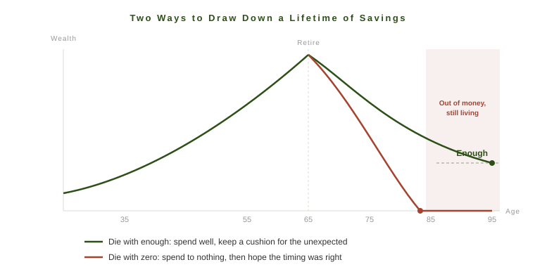

I was on vacation recently with my whole family. My wife and kids, my parents, both of my brothers, their wives, their kids. A full house, the kind of trip where dinner takes two hours because nobody wants to leave the table.
One night my parents told a story about a couple they had met that very day. This couple had retired young, earlier than anyone expected, and they were spending their money with real intention. Big trips. Experiences. Time with people they loved. And they had explained the plan to their own children, which was essentially this: we are going to spend it while we can still enjoy it, so do not count on a large inheritance.
The book behind their thinking was Die With Zero by Bill Perkins. I had heard of it. I had never read it. That dinner conversation is what finally got me to pick it up.
I am glad I did. For a lot of people, this is exactly the book they need to read. It also makes its point by running to an extreme, and I think the more useful lesson sits a few steps back from where the title plants its flag.
The Good Idea Inside the Book
Perkins is a hedge fund manager who made a lot of money trading energy, and his central observation is one most people feel but rarely act on. Money, health, and time do not stay in balance across your life. When you are young, you have time and health but no money. In your peak earning years, you have money and health but no time. And in retirement, if you did everything right, you finally have money and time but your health is fading.
So people spend decades saving for a version of themselves who may not be able to enjoy the reward. The 75-year-old with a full bank account often cannot do the things the 35-year-old dreamed about. The knees give out, the energy fades, and sometimes the spouse is already gone.
Perkins has a term I found useful: the memory dividend. When you spend money on an experience, you do not just get the experience. You get the memory of it, replayed for the rest of your life. A trip you take at 30 pays out for fifty more years. That is why, in his framing, experiences bought early are worth more than the same experiences bought late. They compound, like an investment.
He pairs this with something he calls time bucketing. Instead of one vague finish line called retirement, you divide the decades ahead into buckets and ask what actually belongs in each one. Backpacking belongs in your 20s, not your 70s. Certain adventures have an expiration date that has nothing to do with your bank balance.
If you are someone who has spent your whole life heads-down, deferring, saving for a someday that keeps moving, this book is a wake-up call worth having.
Money Was Never the Point
Underneath all of this is an idea I wish more people sat with: money is not a good goal in itself.
A pile of money does nothing. It has no value until you exchange it for something, either now or later. A trip, a home, an education, a year of your time back, security for someone you love. The number in the account is just stored potential. Perkins is right that people lose sight of this. They start treating the balance as the scoreboard, optimizing the number for its own sake, and forget to ever cash it in for a life.
So the question is never really "how much should I have?" It is "what is this money for?" That is a much harder question, and the reason the book resonates is that most people have never actually answered it.
Why the Extreme Misses Most of Us
This is where I part ways with the title.
Die With Zero is a slogan, and slogans teach people. Taken literally, it is an instruction to run your resources down to nothing by the time you die. Perkins uses that extreme on purpose, to shake loose the over-saver. But for most of us, spending down to zero is not a plan. It is a bet against the one thing none of us can price, which is the future.
You do not know when you will die. You do not know whether you will get a long, expensive decline, a serious illness, or years of care that cost a fortune and do not stop. Spend down on the assumption that the future will cooperate, and you can end up old and out of money at the same time, which is the one financial position you can no longer work your way out of.

This is why "too much" money is rarely the mistake it looks like. That cushion is not sitting there idle. Its whole job is to absorb what you did not see coming. To be fair, Perkins knows this. Deeper in the book he tells you to use actuarial data and tools like income annuities to guarantee a floor you cannot outlive, and to insure the downside before you spend freely. It is a reasonable framework. It is also not what the cover says, and not what most readers walk away repeating.
What I Have Actually Seen
There is another side to this that I have watched play out, both in my work and in my own family.
Saving, and passing what you save down to the next generation, can change lives in ways the person doing the saving never sees. One person's hard work can protect people who are not even born yet. Because things go wrong. Sometimes it is an untimely divorce, or an illness that wipes out a career. Sometimes it is simply a child or grandchild who, through no fault of their own, never develops the skills to earn much on their own. When that happens, the money a careful earlier generation set aside stops being an abstraction and becomes the thing that keeps a family steady.
That is a real form of using your money well, even though you spend none of it on yourself. Perkins would call an unspent dollar a wasted opportunity for joy. I have watched those same dollars catch people at the very worst moment of their lives.
This is where I think Perkins may miss something real. There is a deep satisfaction in knowing that your own discipline and responsibility are helping people you may never meet. It is a quieter thing than the rush of a trip or a once-in-a-lifetime experience, and in my experience it lasts a good deal longer.
Everyone is wired differently, and for some people the experiences really will mean the most. But I suspect many people would find more lasting value in knowing they set someone up for the future than in one more thing they got to do. A great experience settles into a memory. Knowing you built a foundation that will steady your family through a future you cannot see is its own kind of dividend, and it may be the one that pays out the longest.
So What Is It For?
None of this is really a math problem. It is a question of values.
For some people, the right answer really is closer to Perkins. Maximize the experiences, spend it while you are healthy, give it to your kids while they are young enough to use it. For others, the right answer is to build something durable, to save more than they will ever need, so that the people they care about are protected against a future no one can predict. Neither of those is wrong. They are just different answers to the question of what matters to you.
For most of us, the honest answer is somewhere in the middle. Enjoy your life in the present and prepare for the future, and accept that balancing the two is the actual work. That is why Die With Zero is worth reading even if you never intend to die with zero. Most of us do not need to be talked out of saving. We need to be reminded not to lose sight of living while we do it.
So spend your money on the life in front of you. Just do not spend the part that is quietly standing guard over the lives you cannot see yet.